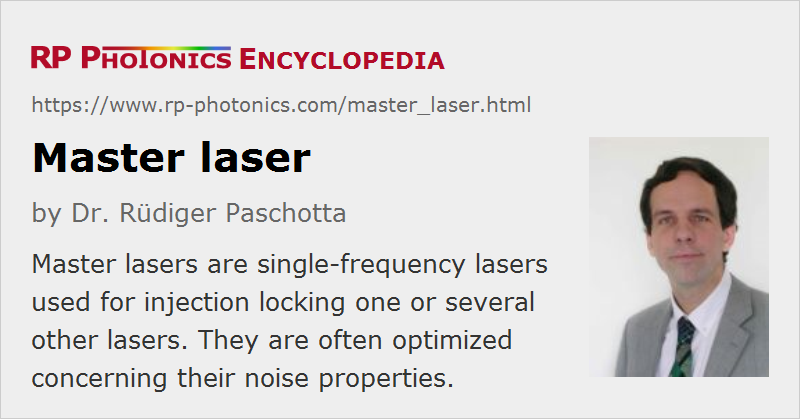

Master Laser
Definition: a single-frequency laser used for injection locking one or several other lasers
Alternative term: seed laser
More general terms: lasers
Opposite term: slave lasers
How to cite the article; suggest additional literature
Author: Dr. Rüdiger Paschotta
A master laser is a single-frequency laser which is used for, e.g., injection locking of one or several slave lasers. Sometimes, the term master laser is also used for a seed laser of a master oscillator power amplifier system.
A master laser often generates an optical power which is well below the output power of the complete laser system; the injection-seeded slave lasers may then be high-power lasers. The modest power requirements for the master laser make it possible to realize a very low level of laser noise, which may be more or less transferred to the whole system. Also, a larger range for wavelength tuning may be accomplished.
Questions and Comments from Users
Here you can submit questions and comments. As far as they get accepted by the author, they will appear above this paragraph together with the author’s answer. The author will decide on acceptance based on certain criteria. Essentially, the issue must be of sufficiently broad interest.
Please do not enter personal data here; we would otherwise delete it soon. (See also our privacy declaration.) If you wish to receive personal feedback or consultancy from the author, please contact him e.g. via e-mail.
By submitting the information, you give your consent to the potential publication of your inputs on our website according to our rules. (If you later retract your consent, we will delete those inputs.) As your inputs are first reviewed by the author, they may be published with some delay.
See also: injection locking, master oscillator power amplifier, seed lasers
and other articles in the category lasers
|  |
If you like this page, please share the link with your friends and colleagues, e.g. via social media:
These sharing buttons are implemented in a privacy-friendly way!